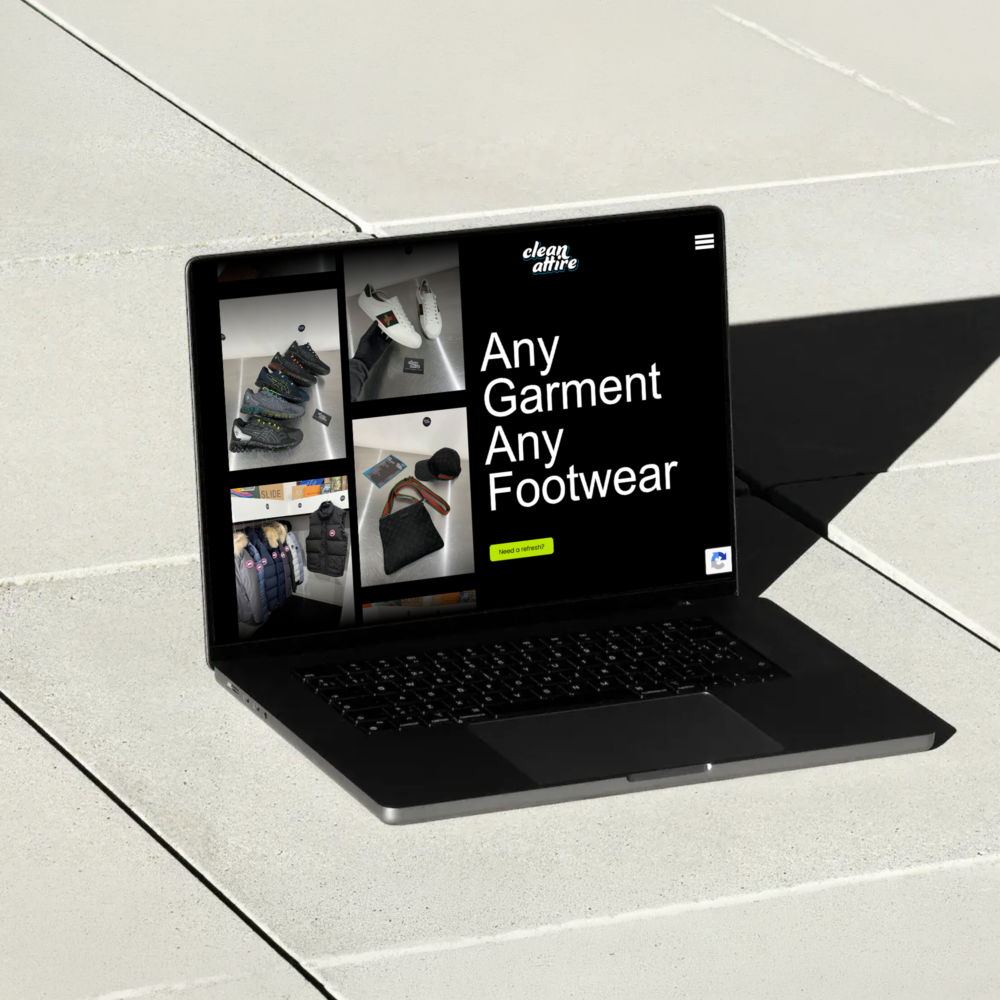

MOBILE FIRST DESIGNED
After conducting research by having a some conversations with customers who use Clean Attire, we realised that the majority contacted them through mobile. Whether that be through social media, whatsapp text or phone. This told us that the website would mainly be accessed on mobile devices, leading to a mobile first design. This is something I tend to start with anyway when designing websites. I prefer to start with a mobile first wireframe/low-fidelity prototype, as it stops me from overthinking the design and interaction, I can quickly layout what needs to be on the site ready to show the client.
INTERACTIVE PROTOTYPING & DYNAMIC UI
Testing interactive cards directly in HTML & CSS. Hovering over service items like Dry Cleaning and Restoration dynamically pulls up extended descriptions and video content to deliver a rich, immersive preview.